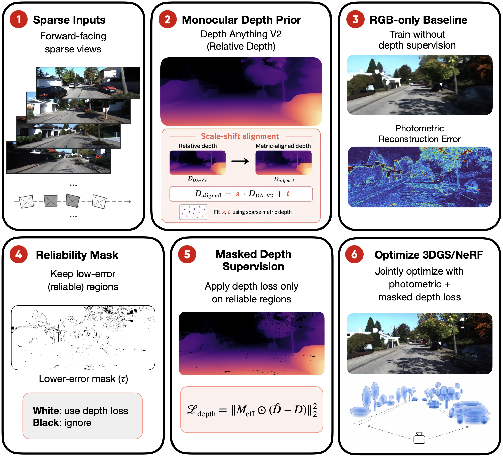
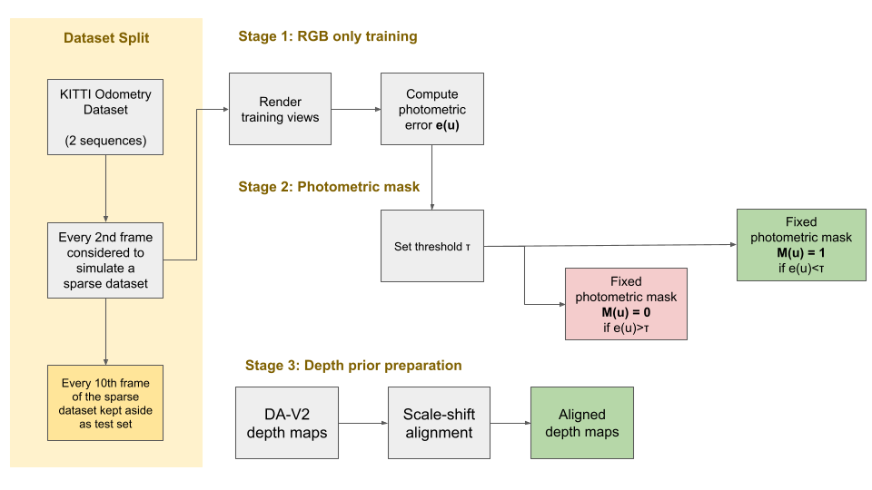
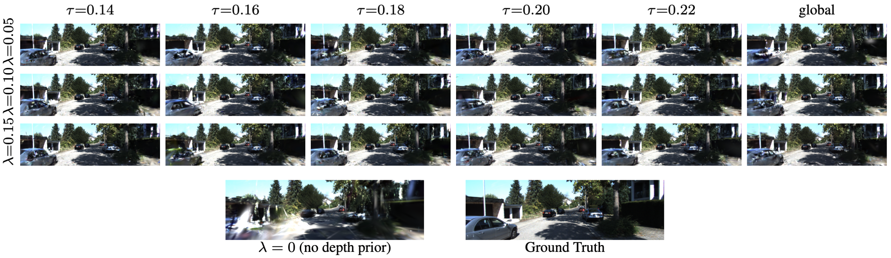
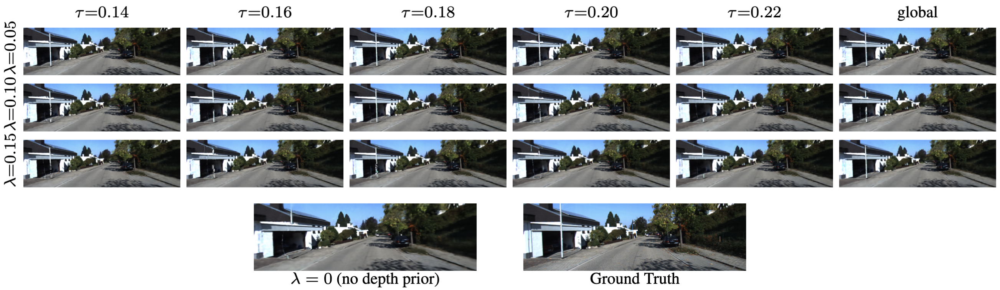
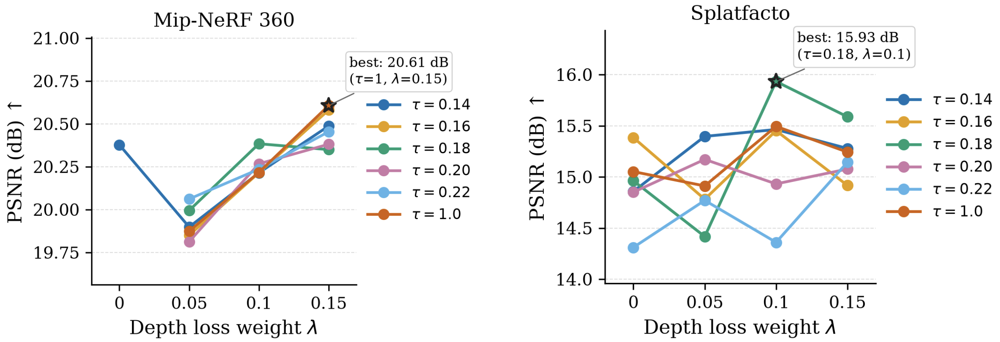
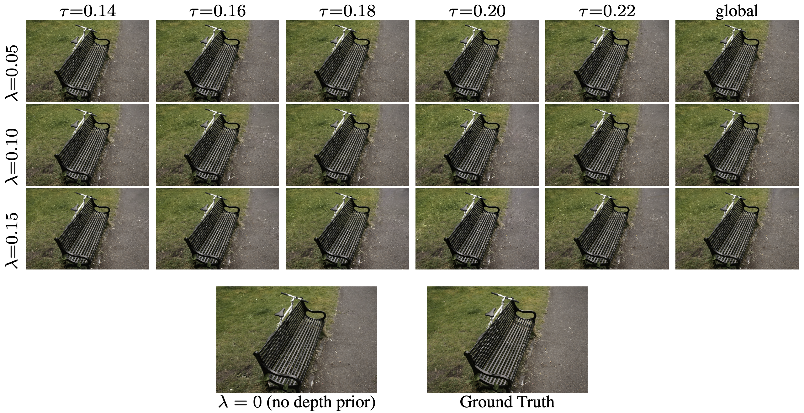

Reliability-Aware Monocular Depth Supervision for Sparse-View Neural Reconstruction

Abstract
Sparse-view neural reconstruction is challenging in outdoor driving scenes, where cameras move along a narrow forward-facing trajectory and provide limited multi-view overlap. Although monocular depth estimators can provide dense geometric priors, their predictions are noisy and not uniformly reliable across image regions. In this work, we study monocular depth supervision for sparse-view neural reconstruction. We use Depth Anything V2 (DA-V2) as a dense monocular depth prior, align its predictions to metric depth using scale-shift fitting, and apply depth supervision selectively through photometric masks generated from an RGB-only baseline model. We evaluate this strategy on two representative scene representations: Mip-NeRF-360 and Splatfacto. On KITTISeq02 under an every-2 sparse-view setting, masked depth supervision gives only marginal gains for Mip-NeRF-360, while Splatfacto benefits more clearly, improving PSNR from 14.903 to 15.932 and reducing RMSE from 0.542 to 0.100. Matched-ratio mask ablations and additional KITTISeq05 experiments show that the gains come from selecting reliable low-error regions rather than simply reducing the number of depth-supervised pixels. Overall, monocular depth priors are useful for under-constrained sparse-view reconstruction, but should be applied selectively and with moderate weighting.
Method
Scale-Aligned Monocular Depth Prior
DA-V2 predicts relative depth, so we align each prediction to a metric reference before training. For KITTI the reference is valid LiDAR depth; for the Bicycle scene it is sparse COLMAP points. Given a monocular prediction \(d_m(u)\) and reference depth \(d_r(u)\) over valid anchor pixels \(u \in \Omega\), we solve a per-image least-squares scale-shift fit:
The aligned prior is \(\hat{d}(u) = s^{*} d_m(u) + t^{*}\), clipped to the 80 m evaluation range on KITTI.
Photometric Reliability Mask
Rather than supervising every pixel, we only supervise where the RGB-only baseline is already reliable. From a baseline render \(\hat{I}\) and the ground-truth image \(I\), we compute a per-pixel photometric error and threshold it at \(\tau\):
High photometric error flags unreliable regions — dynamic objects, reflective surfaces, occlusion boundaries, and sky — where a depth loss would push the model toward wrong geometry. Low-error pixels are already consistent with the RGB observations, so the aligned prior acts as a stabilizing regularizer. The mask is computed once from the RGB-only baseline and held fixed throughout depth-supervised training.
Masked Depth Supervision Objective
The effective supervision mask combines the photometric mask with the depth-validity mask \(D(u)\): \(M_\text{eff} = M_\tau \wedge D\). The depth loss is gated by \(M_\text{eff}\), while the RGB loss is evaluated over the full image:

Results
Splatfacto — KITTISeq02 every-2
Splatfacto gains clearly from masked depth supervision. The best rendering quality is at τ=0.18, λ=0.10 (+1.03 dB PSNR, RMSE down from 0.542 to 0.100). Increasing λ to 0.15 improves RMSE further but trades away PSNR — a geometry–photometry tradeoff.
| Setting (τ, λ) | PSNR ↑ | SSIM ↑ | LPIPS ↓ | RMSE ↓ |
|---|---|---|---|---|
| RGB-only | 14.903 | 0.433 | 0.446 | 0.542 |
| 0.16, 0.10 | 15.452 | 0.454 | 0.434 | 0.106 |
| 0.18, 0.10 (ours) | 15.932 | 0.477 | 0.408 | 0.100 |
| 0.18, 0.15 | 15.588 | 0.459 | 0.436 | 0.096 |
| 1.00, 0.10 | 15.494 | 0.448 | 0.434 | 0.101 |
Matched-Ratio Mask Ablation
To test whether the benefit comes from selecting reliable pixels or simply using fewer pixels, we compare against high-error and random masks with the identical per-frame pixel budget. The low-error mask wins on every metric — the improvement is not from fewer supervised pixels.
| Mask type (λ=0.10) | PSNR ↑ | SSIM ↑ | LPIPS ↓ | RMSE ↓ |
|---|---|---|---|---|
| High-error, matched | 14.932 | 0.437 | 0.455 | 0.111 |
| Random, matched (3 seeds) | 15.036 | 0.442 | 0.456 | 0.109 |
| Low-error, τ=0.18 (ours) | 15.932 | 0.477 | 0.408 | 0.100 |

Mip-NeRF-360 — KITTISeq02 every-2
The implicit density field is far more sensitive to noisy monocular depth. Masked supervision yields only marginal PSNR gains (best +0.23 dB) and does not improve geometry; SSIM, LPIPS, and RMSE slightly degrade.
| Setting (τ, λ) | PSNR ↑ | SSIM ↑ | LPIPS ↓ | RMSE ↓ |
|---|---|---|---|---|
| RGB-only | 20.378 | 0.601 | 0.409 | 2.703 |
| 0.18, 0.10 | 20.384 | 0.594 | 0.416 | 3.532 |
| 1.00, 0.15 | 20.607 | 0.595 | 0.412 | 3.580 |


Object-Centric Bicycle
When multi-view coverage is already strong, the story flips. On the Mip-NeRF-360 Bicycle scene, RGB-only Splatfacto gives the best rendering quality, while depth supervision consistently lowers RMSE (1.479 → 0.722) at the cost of PSNR / SSIM / LPIPS — depth regularization over-constrains an already well-posed reconstruction.

Takeaways
Monocular depth priors are most useful for explicit Gaussian representations in under-constrained, forward-facing sparse-view scenes, and less reliable for implicit NeRF-style density fields. A moderate depth weight on a low-error reliability mask improves both rendering and geometry for Splatfacto, while too-strong supervision sacrifices RGB quality for depth metrics. Future work: better scale alignment, uncertainty-aware masks, and adaptive depth-loss weighting.
Acknowledgements
This project builds on Depth Anything V2, Mip-NeRF 360, Nerfstudio / Splatfacto, and 3D Gaussian Splatting.